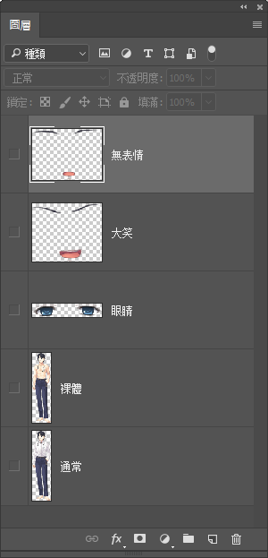

立繪
Librian使用自動化的立繪控制系統，你不需要對每句話指定立繪的位置。
只需要花一點時間來準備你的立繪，就能體驗到高度自動化的立繪演出。
準備立繪
單張png
以 潘大爺 舉例好了。
你只要隨便找一張png圖片，把它改名成「潘大爺.png」，放進工程的立繪路徑。這個文件就是 潘大爺 的立繪了。
但如果這樣做， 潘大爺 只能使用固定的表情和衣着。
(帶通道的BMP已經過時了……)
帶差分的psd
如果需要用到可變的表情和衣着的話，放的就不是png而是photoshop文件「潘大爺.psd」，然後在「映射.yaml」裏指定你的差分配置。
你可以任意準備一個包含立繪各個部分的PSD，只要有頭有身體就行了。
比如說像這樣——

上面兩個圖層是潘大爺不同表情的眉毛和嘴，然後是眼睛，下面兩個圖層是身體。
我們希望能組合出潘大爺的四種狀態，即兩種衣服搭配兩種表情:

配置文檔看起來應該像這樣:
潘大爺:
衣:
_默認:
- 通常
裸體:
- 裸體
顏:
_默認:
- 無表情
- 眼睛
大笑:
- 大笑
- 眼睛
yaml文檔以縮進來分級，解釋一下就是:
- 第一層是人物
潘大爺。 - 它應當是對應的psd文件名。
也是人物在劇本中惟一的名字。 - 第二層是物件類別
衣和顏。 - 它們只能是這兩個字。
用來區分「衣」-> 衣服，「顏」-> 表情。
(我當時隨手打的鍵……) - 第三層是狀態名稱
_默認、裸體等等。 - 它們可以隨你的喜好命名。
「衣」中的每一個是服裝狀態，「顏」中的每一個是表情狀態。
_默認一定要有，這是你沒有指定時的默認狀態。
潘大爺 (大笑)「哈哈哈！」中的大笑就是這裏的表情狀態。 - 第四層是引用的圖層名。
- 它們應當與對應的圖層名一致。
每一行都會選取psd文件中那個同名圖層。
橫線之後接一個空格，然後寫下這個狀態需要psd中的哪些圖層。
此外，如果你喜歡按圖層組整理圖層，像是這樣:

也可以把圖層組用斜線寫出，來使用包含在圖層組裏的圖層——比如 群組 1/大笑 即爲 群組 1 圖層組中的 大笑 圖層。
多張png模擬差分
有時你會在網路上找到這樣的立繪包，裏面的立繪除了表情都長得一樣。
像是這樣:

你需要將他們拼接成一張psd。把所有的圖片全都塞進一張psd裏就行了。
你的配置文檔應該像這樣:
潘大爺:
衣:
_默認: []
顏:
_默認:
- 1
大笑:
- 2
嚴肅:
- 3
然後你就可以像使用普通的psd立繪一樣使用它了。
適用立繪
又隨便寫了樣例:
@潘大爺 + 裸體
潘大爺 「我看看……」
潘大爺 (大笑)「哈哈哈，你是豬嗎？」
Librian是這樣處理的——
-
@潘大爺 + 裸體。後端將
潘大爺的衣服設置爲裸體。 -
潘大爺 「我看看……」(對話，沒有指定表情)。後端將
潘大爺的表情設置爲_默認。前端繪圖，此時
潘大爺爲裸體+默認表情的狀態。因此從「潘大爺.psd」取得裸體、無表情、眼睛三個圖層，從下往上進行疊加。 -
潘大爺 (大笑)「哈哈哈，你是豬嗎！」(對話，有表情)。後端將
潘大爺的表情設置爲_大笑。前端繪圖，此時
潘大爺爲裸體+大笑表情的狀態。因此從「潘大爺.psd」取得裸體、大笑、眼睛三個圖層，從下往上進行疊加。
額外功能
固有縮放
在「映射.yaml」裏你可以對每個立繪指定一個固有縮放值，將立繪整體縮放一個數值。
這個功能可能用於:
-
在製作原型時，使用了東拼西湊的立繪來源。
-
自己畫立繪的時候不小心畫大了，又不想改圖層大小的時候(因爲可能會接着改圖)。
潘大爺:
縮放:
0.9
衣:
...
顏:
...
話語表情
在「映射.yaml」裏你可以對每個表情指定「默認狀態」和「話語狀態」，當前人物在說話時，當前的表情就會暫時地變成說話時的狀態。
顏:
_默認:
_默認:
- 顏/通常
_語:
- 顏/張嘴
笑:
_默認:
- 顏/笑
_語:
- 顏/開口笑
怒:
- 顏/怒
- 特效/怒氣特效
對於這個例子，如果 潘大爺 的表情是 笑 ，平時會使用圖層 顏/笑 而在輪到他說話的時候使用圖層 顏/開口笑 。
如果 潘大爺 的表情是 怒 ，因爲沒有指定表情狀態，輪到他說話的時候就沒有變化。
獲取立繪
雖然立繪功能很好，但是顯然Librian並不能解決你沒有立繪的問題……
關於無米之炊的問題，我能想到的解決方案有:
-
自己畫(笑)。
晉平公 「師曠啊，我今年七十歲了，想學原畫，怕是已經晚了。」
師曠 「天晚了就點蠟燭吧。」
晉平公 「你是臣子，怎麼能戲弄君主呢。」
師曠 「我怎敢戲弄君主。」
師曠 「年輕好學，就像陽光。年老好學，就像燭光。燭光雖然弱，但也比一片漆黑來的好。」
晉平公 「你說的有理。」 -
如果你有很多錢的話，可以去請畫師……
這個時候應該推薦什麼綜合畫師服務平臺，沒有給贊助錢我纔不會說名字呢(傲嬌)。
-
向原畫界宣傳開源共享的精神(笑)
這樣就有數不清的原畫啦！
(黑人問號) -
在原型開發階段，可以借用別的GAL的拆包立繪。
因爲後期換掉也很簡單。
(肥宅的事情怎麼能算偷呢！) -
使用先進人工智能生成圖像。
-
使用 MakeGrilsMoe 生成頭像。
make.girls.moe 是使用 GAN(生成對抗網絡) 生成頭像的網站，幾乎每個生成的頭像都是獨一無二的。
使用許可上，非商業用途可以免費使用。 也就是說如果你要拿生成的頭像去steam上架的話可能就要交錢啦。
-
使用 StyleGAN 生成頭像。
StyleGAN 是新型的生成對抗網絡，可以生成高質量的圖片。
https://github.com/NVlabs/stylegan。
壞處: 爆發智械危機的時候會被機器人抓起來關進牛棚裏。
-